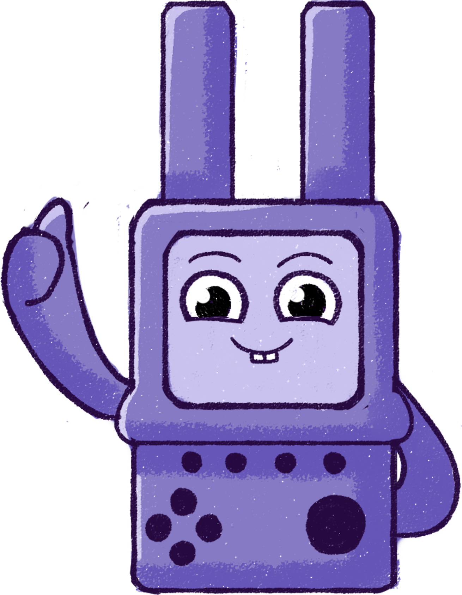

Узнайте больше для безопасности ребёнка
Здесь вы найдете полезные статьи о том, как объяснить ребенку, как безопасно пользоваться гаджетами
-
Цифровое детство. Первые шаги ребёнка в интернете и как их обезопасить
Кажется, ещё вчера ребёнок делал первые шаги, а сегодня уже листает ленту на телефоне. Интернет — огромный и любопытный мир, и задача родителей — сделать его максимально безопасным.
Разбираемся, как настроить родительский контроль, объяснить простые правила безопасности и изучать цифровой мир вместе с ребёнком.
Подробнее →
-
Не просто сидит в телефоне. Чем на самом деле занимается ваш ребёнок?
За экраном телефона скрывается целый мир: соцсети, игры, творчество и общение. Всё это влияет на самооценку, настроение и интересы ребёнка сильнее, чем кажется.
Рассказываем, как посмотреть на цифровую жизнь глазами ребёнка, проявить искренний интерес и обсудить безопасность без нотаций.
Подробнее →
-

Угрозы для детей в интернете и как их определить родителям
Интернет — это не только игры и видео, но и риски: кибербуллинг, мошенничество, опасный контент и навязчивые знакомые. Важно вовремя заметить тревожные сигналы.
В статье разбираем основные онлайн-угрозы и даём простые шаги: от диалога с ребёнком до настроек родительского контроля и безопасного поиска.
Подробнее →
-
Как научить ребёнка защищать свою приватность в цифровом мире?
Фото, геометки и посты складываются в цельную картину о жизни ребёнка. Поэтому важно с детства объяснить, что такое личная информация и как с ней обращаться.
Объясняем на простых примерах, что нельзя публиковать никогда, как настроить приватность в соцсетях и зачем нужны сложные пароли и двухфакторная защита.
Подробнее →
-
Игровая зависимость. Как распознать и справиться с этой проблемой?
Когда игры и соцсети становятся главным интересом, а всё остальное отходит на второй план, родителям важно вовремя заметить первые признаки зависимости.
Рассказываем, какие «звонки» должны насторожить, как договариваться о времени за экраном, искать альтернативы и выстраивать здоровые цифровые привычки для всей семьи.
Подробнее →
Подробнее